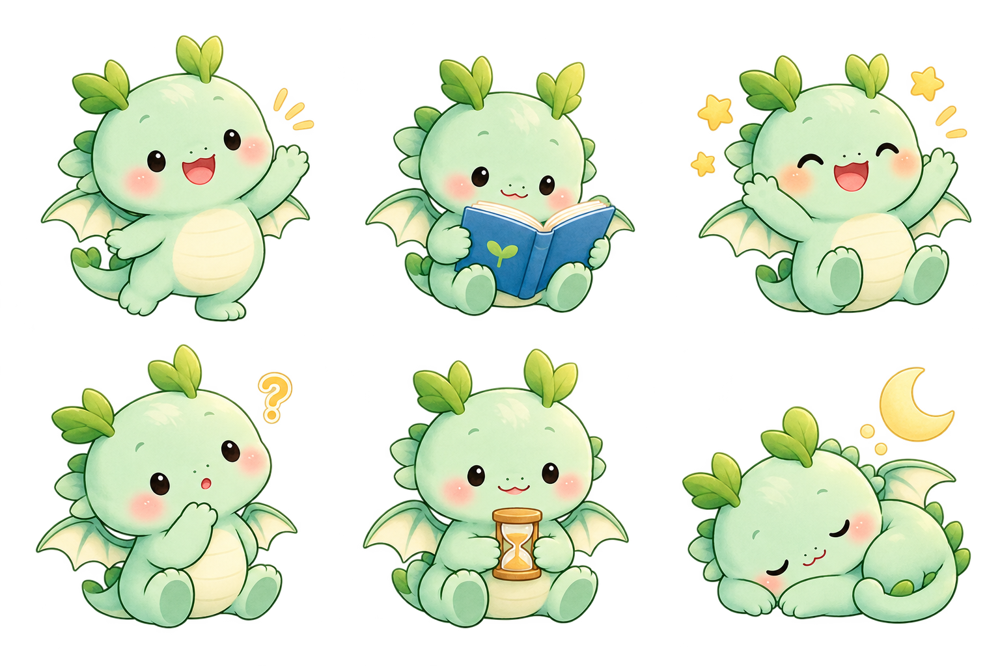

아이·부모 핵심 흐름
오늘 → 계획 → 타이머 → 도움 → 완료 → 부모 확인 → 자유시간 → 회고·성장
핵심 화면 보기전체 화면 제작 패키지 · 2026-10-07
아기 용과 정원 스타일을 전체 화면에 적용한 한글 디자인입니다.
오늘 → 계획 → 타이머 → 도움 → 완료 → 부모 확인 → 자유시간 → 회고·성장
핵심 화면 보기가족 설정 · 모드 전환 · PIN · 저장과 연결 · 알림 · 태블릿
추가 화면 보기두 아이의 진행, 승인, 반복 할 일, 성장, 설정, 화면 잠금
PC 화면 보기
체험 PIN 1234. 디자인 동작 참고용이며 실제 저장·인증·알림·기기 제한은 연결되지 않았습니다.